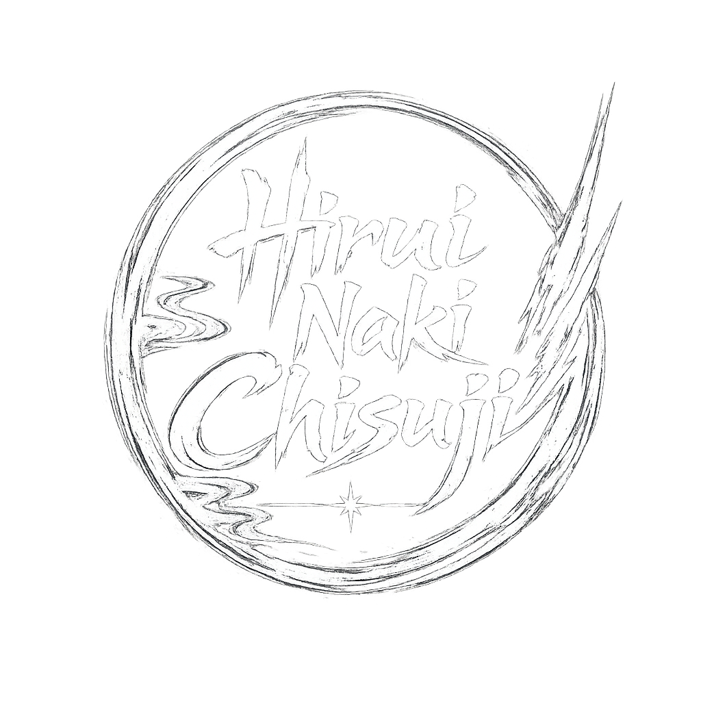
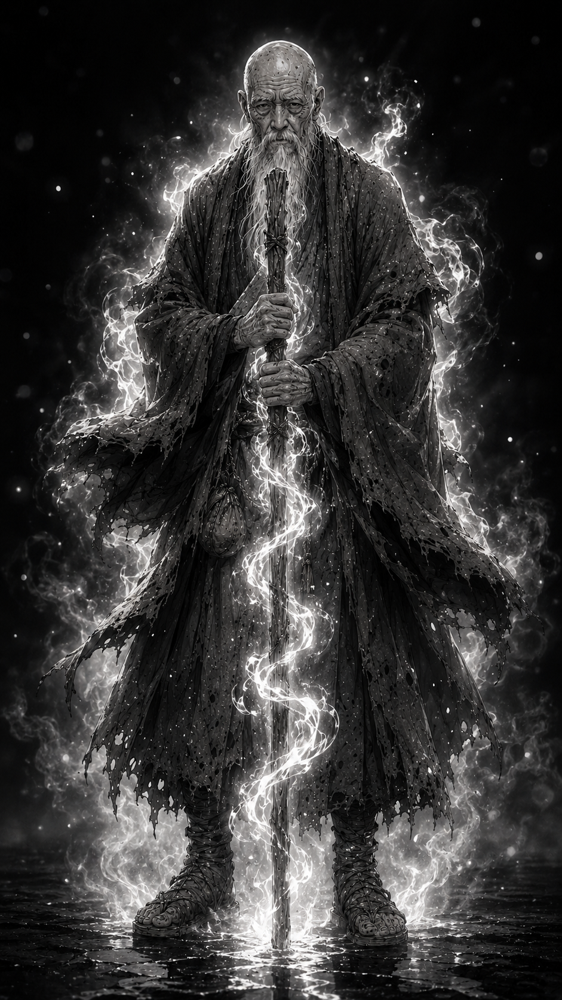
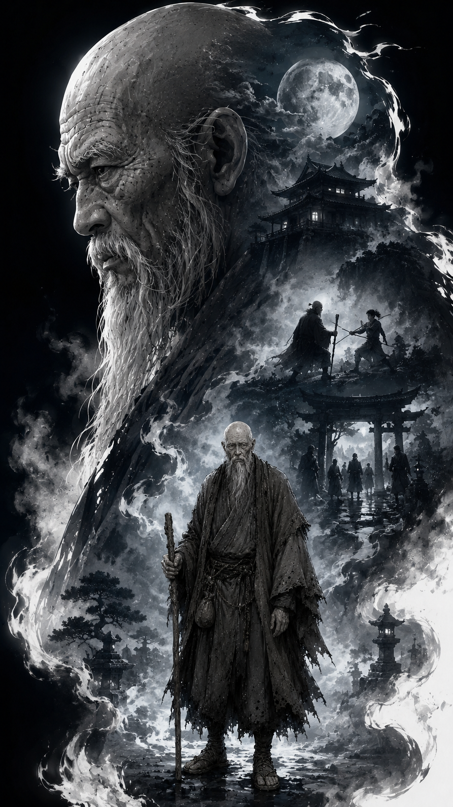

“Toda lenda nasce de algo que os homens tiveram medo de encarar.”
O Homem Que Escuta A Terra Gemer
Mestre Akihito é conhecido por poucos e procurado apenas por aqueles que já chegaram perto demais das sombras. Vivendo isolado em uma cabana apodrecida sobre o pântano do norte, ele parece mais uma extensão daquele lugar do que um homem comum.
Seus olhos são leitosos e cegos, mas sua percepção ultrapassa a visão dos homens. Akihito sente presenças, reconhece intenções e fala como se a própria terra lhe contasse aquilo que os vivos tentam esconder.
Entre frascos de ervas, raízes secas, remédios antigos e pergaminhos esquecidos, ele guarda histórias que muitos clãs prefeririam apagar. Para os camponeses, é apenas um velho estranho do pântano. Para os que conhecem a verdade, é um dos últimos homens capazes de ligar lendas antigas aos horrores do presente.
Akihito conheceu Seijuro Kurosawa e recebeu dele um segredo que deveria permanecer escondido até o momento certo. Quando Rin retornou transformada pela dor, pela perda e por uma sombra diferente em seu sangue, o velho compreendeu que aquilo que Seijuro temia finalmente havia despertado.
Foi Akihito quem revelou que nem toda herança nasce do sangue reconhecido pelos homens. Foi ele quem entregou a Rin a verdade guardada por Seijuro, permitindo que ela encarasse a origem de sua própria existência e o peso de uma linhagem que nunca pediu para carregar.
Também foi Akihito quem falou a Katsuro sobre aquilo que espadas comuns não podiam vencer. Para ele, enfrentar um Oni com aço comum é como desafiar uma montanha com madeira podre. Homens podem lutar, sangrar e morrer, mas sem conhecimento, sua coragem não passa de sacrifício inútil.
O velho conhece o Aço da Lua Negra, um minério escondido nas entranhas das montanhas Kurotsuki. Frio ao toque mesmo diante do fogo, esse metal carrega uma memória antiga, nascida de conflitos anteriores aos clãs, aos impérios e às guerras humanas.
Akihito não entrega respostas como presentes. Ele oferece verdades como lâminas: afiadas, perigosas e quase sempre acompanhadas de um preço.
Em sua cabana, no meio da névoa, ele observa a guerra se aproximar sem precisar vê-la. Sabe que Rin, Takeshi e Katsuro não caminham apenas contra inimigos humanos, mas contra algo que se enraizou no mundo muito antes deles nascerem.
Para alguns, Akihito é um curandeiro. Para outros, um louco. Para aqueles que ousam escutar, ele é uma ponte entre a história esquecida e o inferno que se aproxima.
E no pântano onde tudo apodrece lentamente, Mestre Akihito continua esperando. Porque algumas verdades não precisam ser procuradas.
Elas sempre voltam.
“Você quer matar um demônio? Primeiro, terá que forjar a lâmina no seu próprio inferno.”